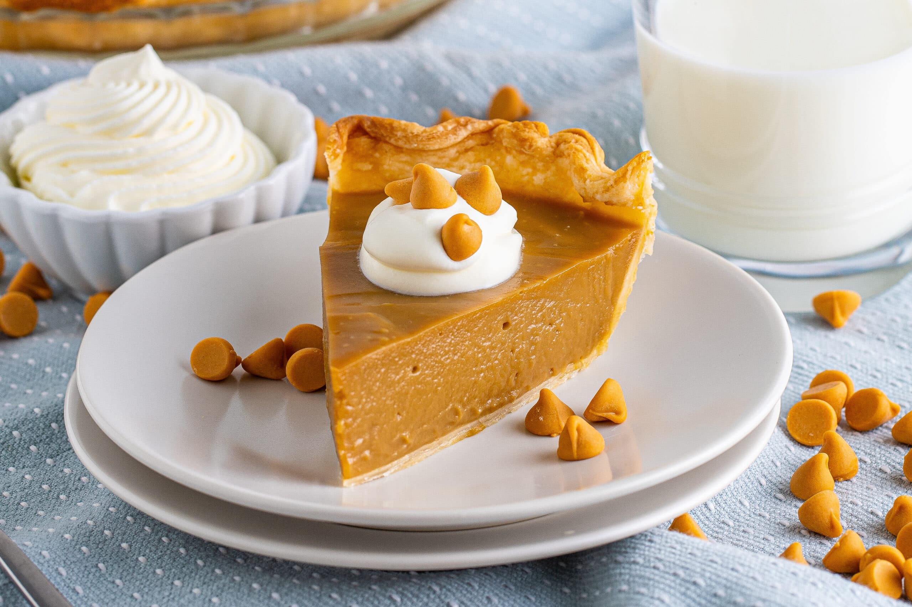

Butterscotch Cinnamon Pie
Link to website containing recipe.

The recipe is pretty easy to follow, but does require many common kitchen tools
and utencils.
It is a recipe that I have always wanted to make, and one day I will make it.
Ingredients
- Dough
- 2 1/2 cups all purpose flour.
- 2 tablespoons sugar.
- 1/2 Vanilla Bean.
- 1/2 cup salted butter, ice cold.
- cup butter flavor shortening, cubed & ice cold.
- 6 tablespoons buttermilk, chilled
- Egg wash
Steps
- Preheat oven to 350ºF.
- In a large bowl combine flour, sugar, vanilla bean, and salt.
- Add butter and shortening and then work brtween fingers until the mixture resembles coarse meal.
- Drizzle in ice-cold buttermilk and continue working to form dough.
- Shape the dough into a disc and wrap tightly in plastic wrap. Refrigerate for 2 to 24 hours.
- Roll it out to 1/4 inch thick and place into pie pan. Remove the excess.
- Roll out dough excess and cut out small squares.
- Brush egg wash along the edges and then arrange the dough squares in a pixelated design.
- Prick the bottom and inside edges of the pie crust with a fork.
- Cover the pie with plastic wrap and then fill it with uncooked beans. Wrap the beans with the excess plastic.
Egg wash edges of the crust.
- Bake for 35 minutes until golden brown around the edges.
- Remove beans and bake another 10 to 15 minutes.
Filling
- In medium bowl, whisk cornstarch, salt and egg yolk until smooth. Whisk in milk.
- In a saucepan, melt butter over medium high heat and add dark brown sugar. Brink to a boil and whish constantly for 3 minutes.
- Combine the cream mixture and the sugar mixture. Slowly whisk in the egg mixture.
- Add salt and cinnamon and then bring to a boil, whisking constantly.
- Once thickened, remove from heat and then whisk in butterscotch chips.